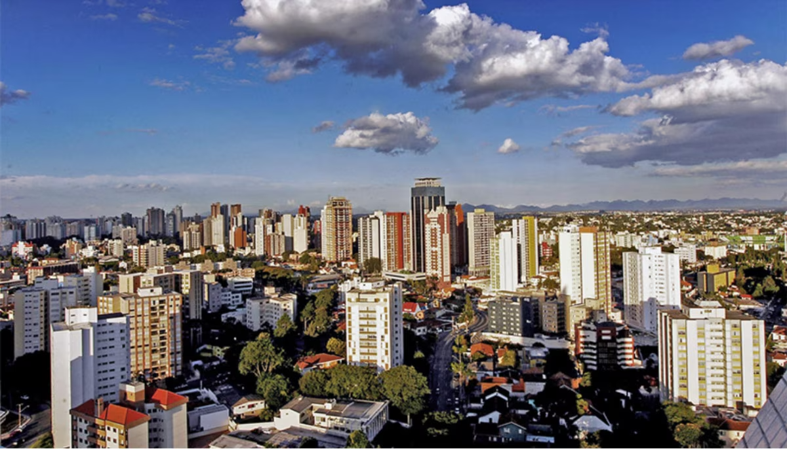
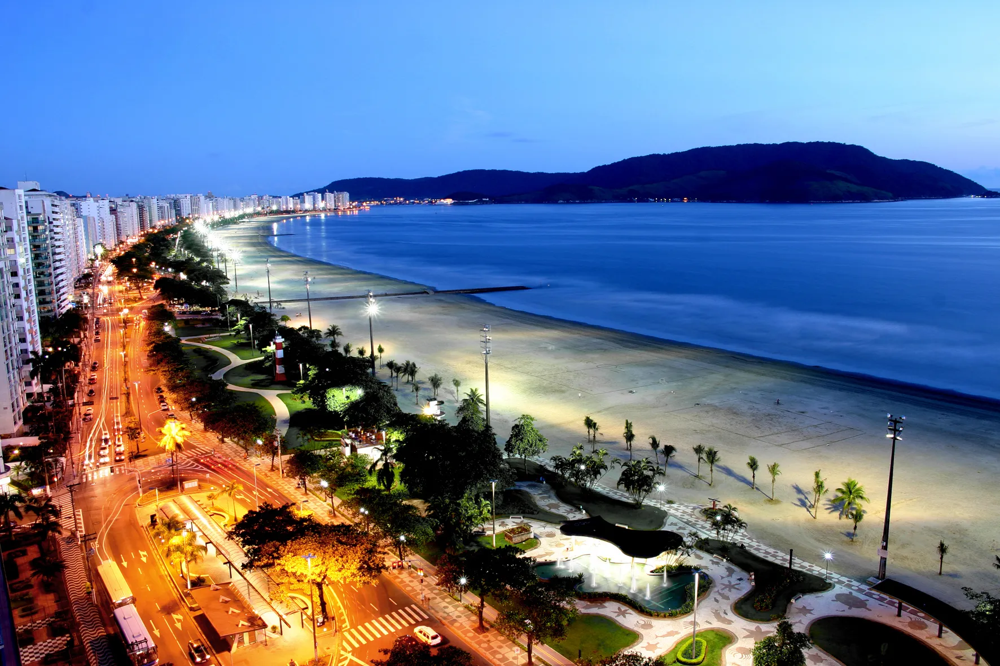
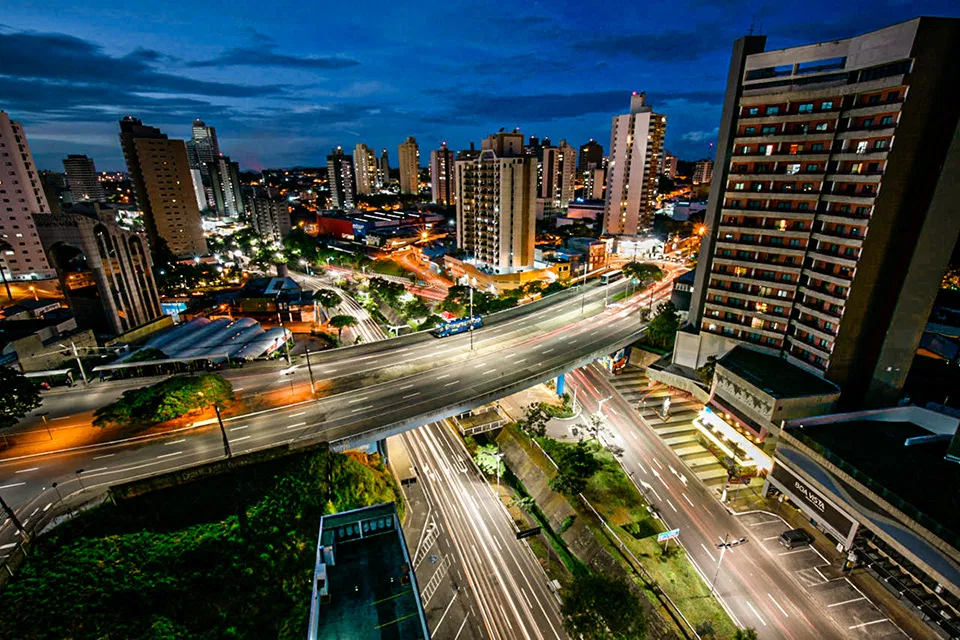
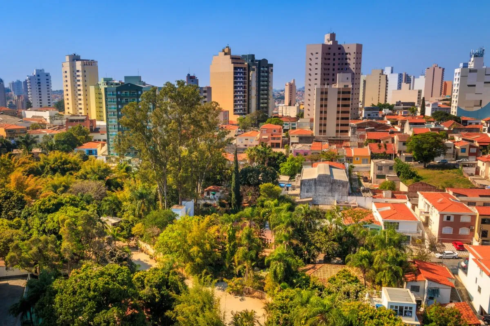

As 10 + Cidades Inteligentes do Estado de São Paulo
Quando se fala em cidades inteligentes, muita gente logo pensa em
tecnologias futuristas, cheias de sensores e carros autônomos circulando
por aí. Mas, na prática, uma cidade inteligente vai muito além disso.
Ela busca usar a tecnologia de forma estratégica para melhorar a vida
das pessoas, seja por meio da mobilidade urbana, da sustentabilidade, da
educação ou até mesmo da forma como a gestão pública se relaciona com os
cidadãos.
No Estado de São Paulo, que é o mais populoso e um dos mais
desenvolvidos do Brasil, algumas cidades vêm se destacando justamente
por adotar esse modelo mais inovador e eficiente de administração. Essas
cidades investem em soluções criativas para problemas do dia a dia,
integram dados para tomar decisões mais inteligentes e promovem
qualidade de vida por meio de políticas públicas mais conectadas com as
necessidades da população.
Neste conteúdo, você vai conhecer as 10+ cidades inteligentes do Estado
de São Paulo — aquelas que estão na frente quando o assunto é inovação
urbana. Seja pela infraestrutura tecnológica, pela forma como usam dados
para planejar o futuro ou pelo jeito como engajam seus moradores, essas
cidades estão dando exemplo de como é possível crescer de forma
sustentável e inteligente.

1 º Cidade Inteligente - São Paulo
São Paulo se destaca como a maior metrópole do Brasil e um dos centros
de inovação mais relevantes da América Latina. A cidade investe em
tecnologia aplicada à gestão urbana, com semáforos inteligentes,
sistemas integrados de transporte e monitoramento de tráfego em tempo
real, tornando a mobilidade mais eficiente e sustentável.
O ecossistema de inovação de São Paulo é robusto, com polos
tecnológicos, hubs de startups e centros de pesquisa que fomentam o
empreendedorismo e a criação de novas soluções digitais. Essas
iniciativas fortalecem o desenvolvimento econômico e a geração de
empregos altamente qualificados.
Além disso, São Paulo prioriza a educação, saúde e sustentabilidade,
promovendo programas sociais, centros culturais e políticas ambientais.
A cidade é referência em planejamento urbano moderno, equilibrando
crescimento populacional com infraestrutura tecnológica avançada para
garantir qualidade de vida aos habitantes.

2 º Cidade Inteligente - São Caetano do Sul
São Caetano do Sul é conhecida por sua excelência em educação e
segurança, destacando-se em indicadores de qualidade de vida. A cidade
investe em conectividade e infraestrutura tecnológica, com redes de
fibra óptica e recursos digitais nas escolas que fortalecem o
aprendizado e o desenvolvimento de habilidades tecnológicas.
Além disso, o município mantém sistemas de monitoramento urbano e
policiamento inteligente, garantindo maior proteção e bem-estar para os
moradores. O planejamento urbano eficiente contribui para o equilíbrio
entre áreas residenciais, comerciais e de lazer, promovendo a
organização da cidade.
A gestão pública de São Caetano do Sul é moderna e transparente, com uso
de dados para otimizar serviços, planejar políticas públicas e aumentar
a participação da população. Esses fatores consolidam a cidade como um
modelo de smart city de médio porte no país.

3 º Cidade Inteligente - Barueri
Barueri se destaca pelo forte desenvolvimento econômico e eficiência
administrativa. O município possui um dos maiores PIB per capita do
país, impulsionado por setores de serviços, logística e indústria,
tornando a cidade um polo de oportunidades e inovação.
A cidade também investe em tecnologia aplicada à gestão pública, com
digitalização de processos administrativos e uso de dados para
planejamento urbano. Essa modernização contribui para a transparência,
redução de custos e melhor atendimento à população.
Além disso, Barueri é reconhecida pela qualidade de vida oferecida aos
moradores, com infraestrutura moderna, áreas de lazer, educação de
excelência e atenção à saúde, consolidando-se como referência em
eficiência e governança inteligente.

4 º Cidade Inteligente - Jaguariúna
Jaguariúna se destaca como uma das cidades mais inteligentes entre
municípios de médio porte, graças ao uso intenso de tecnologia na
educação e gestão urbana. Sistemas digitais permitem matrículas online,
acompanhamento escolar em tempo real e comunicação direta com famílias.
A cidade também investe em saúde e urbanismo inteligente, com
aplicativos que facilitam consultas médicas, agendamento de serviços
públicos e monitoramento urbano eficiente. Essas iniciativas tornam o
dia a dia dos cidadãos mais prático e conectado.
Além disso, Jaguariúna promove inovação em governança e
sustentabilidade, com projetos que agilizam processos administrativos e
estimulam a participação da população. Esse modelo de gestão tecnológica
demonstra que cidades menores também podem liderar em smart cities.

5 º Cidade Inteligente - Santana de Parnaíba
Santana de Parnaíba se destaca em segurança e governança, sendo
reconhecida nacionalmente por seus investimentos em monitoramento e
proteção urbana. O município mantém sistemas de vigilância avançados que
contribuem para a redução de crimes e aumento da sensação de segurança
da população.
Além disso, a cidade avança em mobilidade urbana e sustentabilidade, com
ciclovias bem planejadas, transporte eficiente e políticas ambientais
voltadas para a preservação da região. O equilíbrio entre urbanização e
meio ambiente garante qualidade de vida aos moradores.
A gestão pública de Santana de Parnaíba é moderna, com foco em inovação
tecnológica e transparência. Programas educativos e de capacitação
tecnológica para jovens fortalecem a cidade, preparando-a para desafios
futuros e consolidando seu status como smart city.

6 º Cidade Inteligente - Santos
Santos se destaca pelo planejamento urbano sustentável e inovação em
serviços públicos. A cidade possui centros operacionais integrados que
monitoram trânsito, segurança e serviços, garantindo mais eficiência na
gestão urbana e melhor qualidade de vida.
Além disso, a cidade investe em mobilidade, com ciclovias bem
estruturadas e políticas de transporte sustentável, promovendo
deslocamentos seguros e conscientes. A infraestrutura moderna também
valoriza áreas públicas e preserva o meio ambiente.
Santos ainda desenvolve ações em governança digital e tecnologia, com
sistemas que agilizam serviços municipais e incentivam a participação da
população. Essa combinação de sustentabilidade, inovação e planejamento
urbano faz da cidade uma referência em inteligência urbana.

7 º Cidade Inteligente - Jundiaí
Jundiaí se destaca por sua gestão eficiente e planejamento urbano
moderno. O uso de tecnologia em obras públicas, monitoramento de
serviços e automação administrativa garante mais agilidade,
transparência e redução de custos para a administração municipal.
A cidade também oferece serviços digitais para a população, como
aplicativos que permitem solicitações de atendimento, acompanhamento de
processos e informações sobre educação e saúde. Essa digitalização
aproxima o cidadão da gestão pública e facilita o dia a dia.
Além disso, Jundiaí apresenta alta qualidade de vida, com educação de
excelência, infraestrutura moderna, áreas verdes e incentivo à inovação
no setor industrial e tecnológico, consolidando-se como um polo
inteligente regional.

8 º Cidade Inteligente - Campinas
Campinas é um dos maiores polos de ciência e tecnologia do Brasil,
abrigando universidades e centros de pesquisa de renome, como a Unicamp,
CNPEM e CPqD. A cidade se destaca pelo desenvolvimento de projetos
inovadores que impactam educação, tecnologia e economia.
O ecossistema local favorece startups, empresas de tecnologia e
parcerias entre universidades e setor privado, estimulando a produção de
conhecimento e soluções avançadas. Essa combinação fortalece o
crescimento econômico e a geração de empregos qualificados.
Campinas também investe em infraestrutura urbana e serviços públicos
eficientes, promovendo mobilidade, sustentabilidade e qualidade de vida.
Esse equilíbrio entre inovação, educação e planejamento urbano a torna
uma referência em smart cities no país.

9 º Cidade Inteligente - Sorocaba
Sorocaba se destaca pelo equilíbrio entre desenvolvimento industrial e
inovação tecnológica. O município investe em parques tecnológicos e
centros de apoio a startups, oferecendo recursos para pesquisa,
desenvolvimento e capacitação profissional.
A cidade também adota soluções digitais para serviços públicos, como
aplicativos de atendimento, monitoramento urbano e integração de
informações, tornando a administração mais eficiente e próxima do
cidadão.
Além disso, Sorocaba apresenta qualidade de vida elevada, com
infraestrutura moderna, áreas verdes e políticas de sustentabilidade,
consolidando-se como um modelo de cidade inteligente que combina
tradição econômica e inovação.

10 º Cidade Inteligente - Santo André
Santo André é reconhecida pela modernização dos serviços públicos e
digitalização de atendimentos, facilitando a vida do cidadão. A cidade
investe em plataformas online, autoatendimento e integração de
informações para garantir eficiência administrativa.
Além disso, o município prioriza a educação e tecnologia, oferecendo
capacitação digital para estudantes e jovens, preparando-os para o
mercado de trabalho e inovação tecnológica.
Santo André também mantém infraestrutura urbana moderna, com atenção à
mobilidade, segurança e sustentabilidade, consolidando-se como
referência em gestão pública inteligente e cidade conectada.